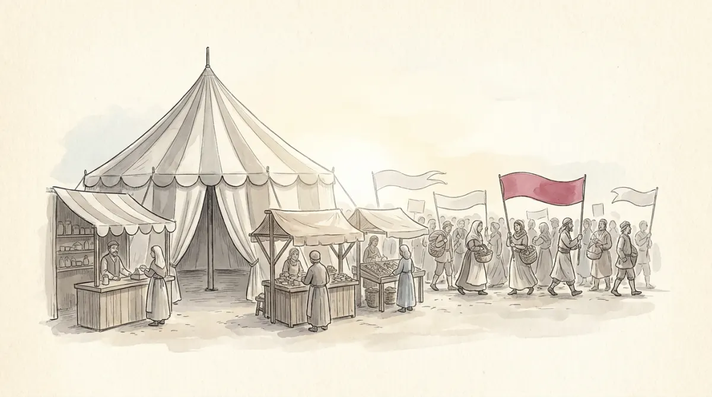

Widen the courtyard of Via Larga 12 into the town's market square. Three kinds of actors work the crowd, and telling them apart is half this lesson's exam value:
The re-take exam asked, verbatim: "Define what political parties are and discuss two functions they perform that are good for democracy" (definition 2 points, each function 2). You dissected the model answer in Poli-00; here is the full toolkit behind it.
The definition: parties are organisations of politically like-minded people seeking political power and public office to realise their policies. Every word earns its place: organisations (not loose crowds: that is a movement), seeking office (not just influence: that is a pressure group), to realise policies (power for a program).
The five democratic functions, the grid's own list, each with its one-line story:
Across the globe's huge party plurality, eight families recur, each born from a cleavage (Poli-08's lines made flesh): socialist, Christian democratic, agrarian, liberal, conservative, regional/ethnic, green, and populist parties.
How parties interact within a country is the party system: dominant one-party systems (one party wins everything, legally), two-party systems, and multi-party systems with their coalition governments. The course's compact formula for how many parties a country grows: P = C + 1: parties = cleavages plus one. One dominant cleavage (class) yields two parties; add a religious line, get three. And the modern trend: party proliferation and increasingly heterogeneous coalitions, as old cleavages fade and new ones (green, populist, territorial) cut across them.
When no party holds a majority (PR's normal weather), governments get built, usually after the election: the largest party's leader tries first, cabinet positions are horse-traded behind closed doors, ideological neighbors and pivotal centre parties matter disproportionately, and the whole dish can take months (Belgium holds the world records). The vocabulary the MCQs test:
| Minimum winning coalition (MWC) | Just enough parties to clear 50%, not one seat more: no free riders sharing the spoils. |
|---|---|
| Minority government | Governs WITHOUT a majority, surviving vote by vote on outside support (a Scandinavian specialty). |
| Oversized coalition | More partners than arithmetically needed: insurance against defectors, at the price of shared spoils. |
| Grand coalition | The main rivals govern together (Germany's CDU + SPD): stability purchased with the risk that opposition migrates outside the system. |
Against the classic complaints (slow, unstable, unaccountable), the course files the defense: Germany, the Netherlands, Scandinavia, Switzerland run superbly on coalitions, which force moderation and inclusion: the middle ground governs by construction.
The other certified exam question: "Define what pressure groups are (identifying their main sub-types) and present the determinants of their power" (definition 2 points, four or more determinants 4). The definition: private and voluntary organisations that try to influence government policies but do not want to become the government. The italicized half is the identity: influence without office.
Two sub-types: interest groups represent occupational interests (business associations, professional orders, trade unions); cause groups are issue-specific and non-occupational (environment, rights, animals). Both exploded as government grew big enough to be worth whispering to, and both work as a second linkage wire between public opinion and government, next to parties. Their toolbox splits by position: insider groups use expertise, elite contacts, and revolving doors to lobby ministries and committees directly; outsider groups use protests, public campaigns, courts, and media to apply pressure from the square.
Traditional alignments (business with the right, unions with the left, cause groups courting whoever governs) have blurred with third-way politics and cross-ideological issues, another modern melt the course flags.
Why does one stall get its way and another shout into the wind? The grid's own list, eight determinants, each one sentence:
The real grid paid the definition 2 points and "at least four determinants correctly identified" 4 points. Memorize the definition perfectly and any five determinants with one explanatory line each, and this question is a banked 6.
Social movements are loosely organised but sustained collective campaigns in support of broad social goals, typically for or against a change in society: networks of groups and individuals working loosely together (some, the "rainbow movements", are networks of networks). New mobilisation issues built them: environment, energy, minorities, gender, housing. And some evolve into parties: greens across Europe, or Italy's own 5 Stelle.
The four differences from pressure groups, verbatim exam material:
| Structure | Pressure groups have formal organization (offices, staff, budgets); movements are decentralized networks united by shared goals. |
|---|---|
| Scope | Groups aim at specific policy issues; movements pursue broad societal transformation. |
| Methods | Groups favor insider strategies (lobbying, negotiation); movements rely on outsider strategies (mass mobilization, demonstrations, cultural persuasion). |
| Duration | Groups can persist indefinitely as institutions; movements are fluid, rising and falling with public momentum. |
Where do the whisperers sit relative to the state? At one pole, corporatism: policy made through the close, formal cooperation of the major economic interests: unions, employers, and government jointly formulating and implementing policy. It needs few, hierarchical associations and a capable state, flourished in Europe (and Latin America), and has been made less viable by globalisation. At the other pole, looser policy networks and consultation. The evaluative frames: pluralists see dense voluntary associations as democracy's social base; the risks are policy capture (the whisperer writes the policy) and hyper-pluralism (so many voices the shop can no longer decide).
Closing trend, bridging to the next lessons: parties and party systems are in trouble: globalisation exports their problems beyond national reach, trust in them is falling (Poli-13 has the data), and pressure on old two-party systems keeps birthing new types: issue-specific parties, nationalist and separatist revivals, and populist-nationalists (Poli-11's subject).
The classification reflex, straight from the exam's favorite hunting ground:
| Party (definition) | organisations of like-minded people seeking power and public office to realise their policies |
| Five democratic functions | aggregation/articulation · communication/mobilisation · losers' consent · stability/continuity · conflict management |
| Eight families | socialist · Christian democratic · agrarian · liberal · conservative · regional/ethnic · green · populist |
| Party systems | dominant one-party · two-party · multi-party; P = C + 1; proliferation trend |
| Coalition types | MWC (just enough) · minority · oversized · grand; formed post-election, largest party first, months of horse-trading; defense: moderation + inclusion |
| Pressure group (definition) | private, voluntary organisations influencing government policy WITHOUT seeking office; interest vs cause groups; insider vs outsider strategies |
| Eight determinants | income/insider status · size · organization · density · cohesiveness · sanction capacity · leadership · salience |
| Movement vs group | structure (network vs office) · scope (transformation vs issue) · methods (outsider vs insider) · duration (fluid vs permanent) |
| Corporatism | formal tripartite policy-making (unions, employers, state); weakened by globalisation; risks: capture, hyper-pluralism |
One square: the tent wants the shop, the stall wants the ear, the crowd wants the town's mind.
Six questions in the written test's style.